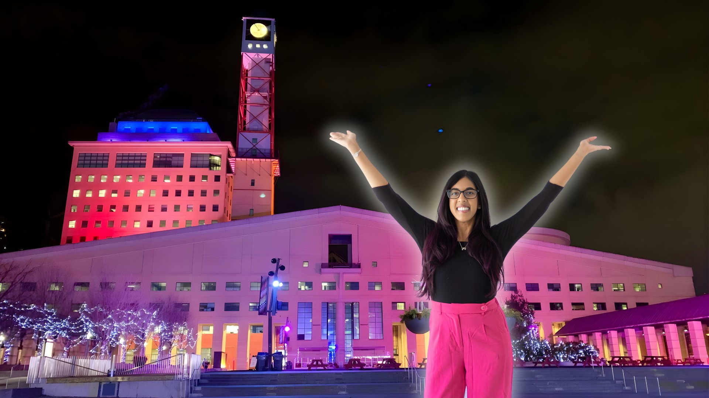
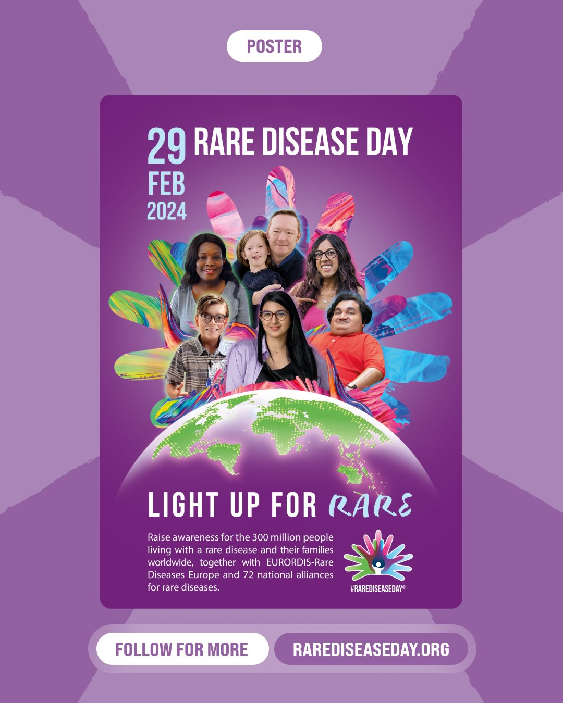

#LightUpForRare
26 Canadian Landmarks. 18 Cities. 4 Provinces.
Every year, landmarks around the world light up for Rare Disease Day. After going undiagnosed for two decades, Lauren Pires wanted to make sure Canada was part of that movement. This is her third year bringing #LightUpForRare to Canadian communities so that others living with rare diseases don't have to feel invisible.

About the Campaign
Lighting Up Canada for Rare Disease Day
Rare Disease Day is observed annually on the last day of February, highlighting the urgent need for research, healthcare equity, and community support for the 300 million people worldwide living with rare diseases. This year's global theme is "Moving Forward. Looking Ahead."
#LightUpForRare is a global initiative where landmarks around the world illuminate in blue, pink, green, and purple to create visibility and solidarity for the rare disease community. Hundreds of landmarks participate internationally each year, from city halls and bridges to airports and science centres.
Lauren went undiagnosed with a rare neuromuscular disorder for the first two decades of her life and spent 30 years hiding her disability. That experience is what drives her to bring #LightUpForRare to Canadian communities. In 2024, she was selected as one of the faces of the official global Rare Disease Day campaign. Working with the Canadian Organization for Rare Disorders (CORD), Lauren has secured 26 Canadian landmarks this year, stretching from Moncton, New Brunswick to Coquitlam, British Columbia, so that others living with rare diseases don't have to feel invisible.

Lauren was selected as one of the faces of the global Rare Disease Day 2024 campaign by EURORDIS–Rare Diseases Europe.
2026 Canadian Illuminations
Participating Landmarks
Lauren's Journey
Three Years of Showing Up
7 cities
1 province
14 cities
3 provinces
18 cities
4 provinces
The Impact
Why It Matters
One in 12 Canadians lives with a rare disease, yet many wait years, sometimes decades, for a diagnosis. Over 300 million people worldwide are affected by one of the 7,000+ known rare diseases. More than 70% of rare diseases are genetic in origin, and approximately 72% affect children. Greater awareness leads to improved research funding, better healthcare access, earlier diagnoses, and increased inclusion for those whose conditions remain invisible.
Take Action
How You Can Get Involved
Visit a participating landmark to see it illuminated in Rare Disease Day colours. Capture the moment and share your photos on social media using #LightUpForRare and #RareDiseaseDay to spread awareness. You can also show your support from home by lighting or decorating your space in Rare Disease Day colours at 7 PM on February 28. Snap a photo and post it to join the global movement.
In Partnership With
Canadian Organization for Rare Disorders (CORD) — Canada's national network for organizations representing all those with rare disorders. CORD provides a strong common voice to advocate for health policy and a healthcare system that works for those with rare disorders.
RareDisorders.ca